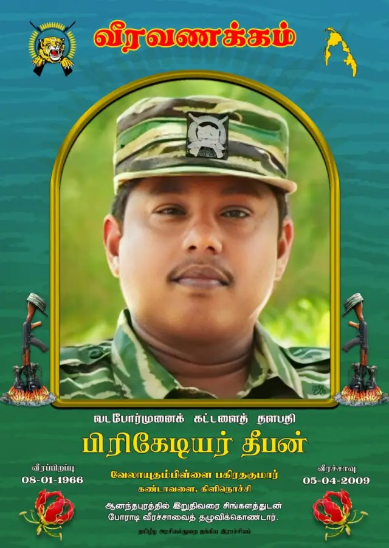

பிரிகேடியர் தீபன் வீர வரலாறு

உண்மைப் பெயர்: கந்தையா சிவநேசன்
இயக்கப் பெயர்: பிரிகேடியர் தீபன் / கரன்
வீரச்சாவு தேதி: 05.04.2009
வீரச்சாவடைந்த இடம்: ஆனந்தபுரம் சமர்க்களம், புதுக்குடியிருப்பு
பிறப்பிடம்: கண்டாவளை, கிளிநொச்சி
வரலாற்றுக்குறிப்பு
விடுதலைப் புலிகளின் வடக்குக் கட்டளைத் தளபதியாக இருந்து வன்னிப் போர்க்களங்களை உக்கிரமாக வழிநடத்தியவர் பிரிகேடியர் தீபன். ஆனையிறவு மீட்புச் சமர், ஜெயசிக்குறூ முறியடிப்புச் சமர் எனப் பலப் பெருஞ்சமர்களில் வியூகம் அமைத்துக் களமாடியவர். 2009-ல் நடந்த இறுதிப் பெருச்சமர்களில் ஒன்றான ஆனந்தபுரம் சமரில் பல நாட்கள் தொடர்ச்சியாகப் போரிட்டு வீரச்சாவடைந்தார்.